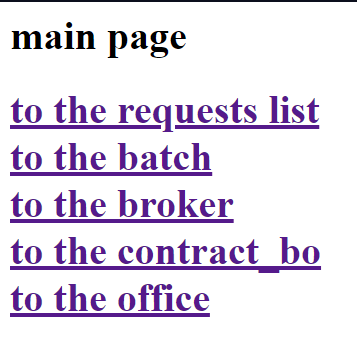
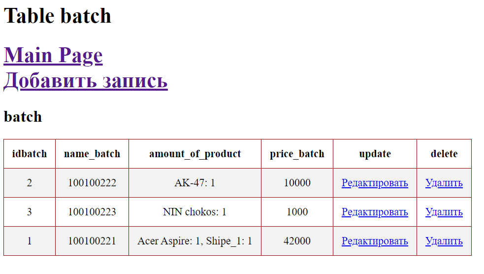
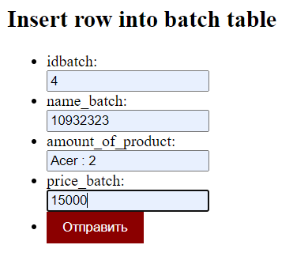
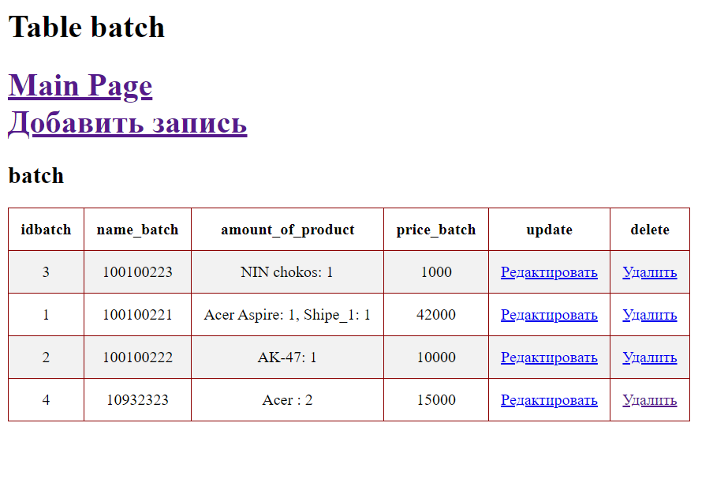
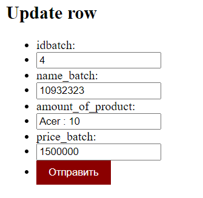
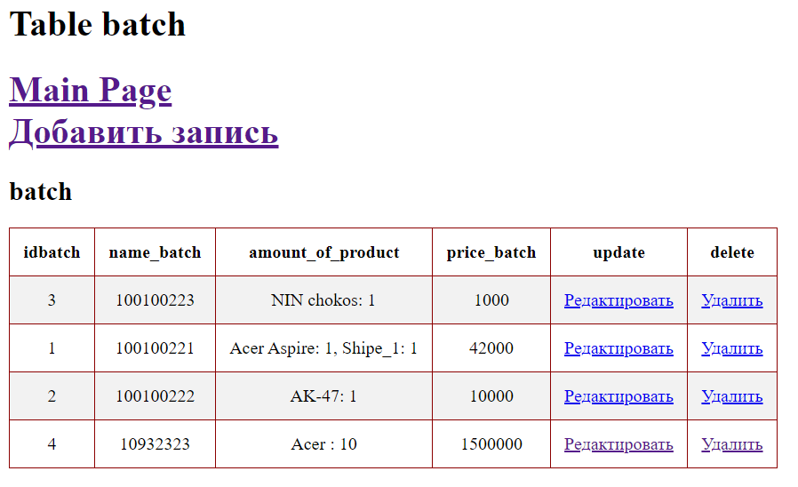
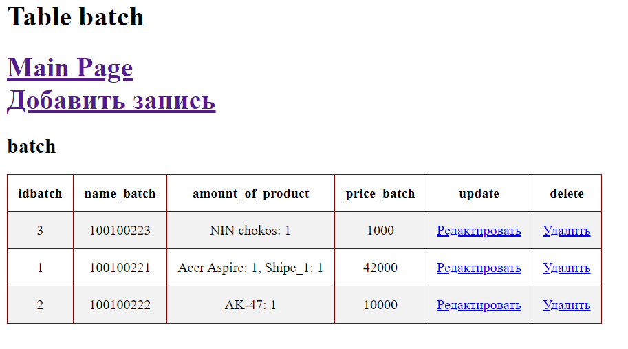
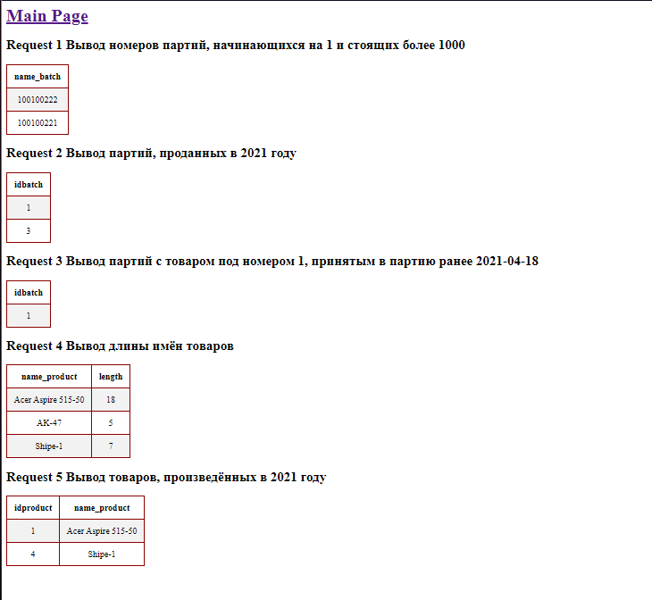

Interfaces
Four blocks of interfaces were implemented. Here is one of them as an example.
Main Page:

Here you can navigate to the desired interface or view a list of queries
Batch
The interface allows you to view table data, add new data, modify and delete them
View table data: 
Add new data:
 
Modify:
 
Delete:

Also here is requests list: 